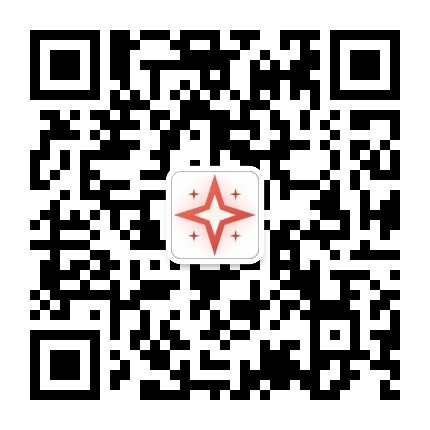
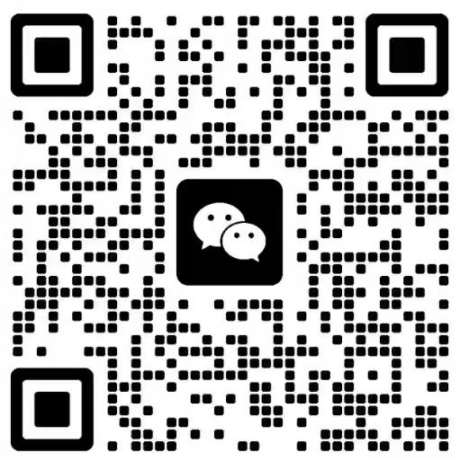

产品服务 / AI 培训
学完能用，才算学会
四层进阶 · 20+ 门课程 · 带走能展示的成果物
不堆工具清单，也不留一堆笔记。每门课对着你的一件真实工作，做完带走一件能拿出来给人看的东西。
一次说清课时、成果物与费用，不需要先加好友
你会带走
3 条工作流获客文案 / 客户问答 / 经营台账
1 份宣讲稿能对外讲清自己在做什么
1 个智能体替你处理一类重复问题
通过考核可获结业证明；认证方向对接相关主管部门认证通道。
课程阶梯 / FOUR LAYERS
四层进阶：从第一堂课到能接活
| 层级 | 适合谁 | 你会带走 | 下一步 |
|---|---|---|---|
| 公益体验 | 想先弄明白 AI 能做什么的个人、亲子与社区学员 | 一次完整体验与可复用的提问方式 | 进入能力跃迁 |
| 能力跃迁 | 在职提效者、一人公司、小微商户 | 3 条固化的工作流与对外宣讲稿 | 接 90 天陪跑 |
| 科创素养 | 想走 AI 应用岗位或需要能力证明的学员 | 结业证明与作品集；认证对接相关主管部门通道 | 进入交付池 |
| 生态共创 | 院校、园区与企业联合培养 | 课程包、师资协同与项目实训 | 课题共建 / 人才对接 |
表格可左右滑动查看完整内容
架构 / L1–L4 ARCHITECTURE
双轨四层：成人培训 ＋ 青少年培训
图 1 P1 AI 培训双轨四层进阶架构图（小屏可左右滑动查看）
课程体系表 / CURRICULUM
L1–L4 双轨课程全表
轨道 A · 成人培训｜L1–L4
| 层 | 课程 | 适合谁 | 课时 | 核心内容 | 收获 |
|---|---|---|---|---|---|
| L1 公益体验 | AI 认知启蒙课 | 社会各界人士 | 3 课时 | AI 基础认知、AI 产品互动体验 | 建立 AI 基本认知，消除技术恐惧，能独立完成一次完整 AI 对话并识别错误 |
| L1 公益体验 | AI 展厅研学体验日 | 机关 / 企业 / 学校组织 | 半天 | AI 产品互动、AI 绘画、AI 对话、AI 写作实操 | 亲身体验 AI 应用场景，带走 1 组个人作品集，明确自身进阶方向 |
| L1 公益体验 | AI 工具 1 天速成 | 零基础职场人 | 6 课时 / 1 天 | 主流 AI 工具注册、首次对话、基础 Prompt 技巧 | 独立使用 3 款以上 AI 工具完成真实任务，拥有 1 个个人提示词库（≥10 条） |
| L2 能力跃迁 | AI 办公实战班 | 在职人员、公务员、企事业行政 | 12 课时 | Prompt 工程、AI 写公文、AI 数据分析、AI 自动化办公 | 办公效率提升 50% 以上，掌握 AI 辅助办公全流程，带走 1 套部门级 AI 办公流与效率台账 |
| L2 能力跃迁 | AIGC 创作实战班 | 媒体、营销、设计、自媒体从业者 | 12 课时 | AI 绘画、AI 视频、AI 文案、品牌内容包制作 | 独立完成 AI 辅助全链路内容创作，产出 1 份可直接投放的品牌内容包（图 + 视频 + 文案） |
| L2 能力跃迁 | AI + 垂直职能微课 | HR / 财务 / 营销 / 教育从业者 | 6 课时 / 方向 | AI + HR 招聘、AI + 财务报表、AI + 营销方案、AI + 教学设计 | 掌握本专业 AI 应用场景，产出 1 份含流程、提示词与评审标准的职能工作方案 |
| L2 能力跃迁 | AI 应用实战赋能班 | 企业骨干、部门负责人 | 12 课时 | 道法术器四层、六步作业规范、真实业务课题带练 | 带走 1 个已跑通的智能体 + 1 套岗位 AI 作业规范，具备独立复制能力 |
| L2 能力跃迁 | GEO 基础班 | 品牌、市场、运营、公关负责人 | 12 课时 | AI 失语症、GEO 与 SEO 差异、五平台实测、事实原子、证据金字塔 | 产出 1 份可复核的品牌 AI 可见度体检报告，能自测 AIV / FRR / T3R / CR 四维指标 |
| L3 科创素养 | AI 智能体应用师 | 转行 / 求职人员 | 42 课时 + 考前辅导 | AI Agent 搭建、Prompt 高级技巧、行业场景应用、认证考试 | 获国家认证证书 + 就业推荐，带走 3 个可运行的智能体作品 |
| L3 科创素养 | AIGC 应用工程师 | 技术岗位转型者 | 42 课时 + 项目实战 | AIGC 全栈开发、项目实战、作品集打造、认证考试 | 获国家认证 + 项目作品集，具备胜任 AIGC 工程岗位的交付能力 |
| L3 科创素养 | 人工智能训练师 | 有编程基础者 | 42 课时 + 考前辅导 | 数据标注、模型训练、评估优化、行业认证 | 获国家认证 + 补贴申领资格，可独立承担 AI 训练师岗位工作 |
| L3 科创素养 | GEO 运营师认证 | GEO 从业者、代运营团队、企业品牌岗 | 24 课时 + 考核 | IMPT 四阶、L1–L5 成熟度、五平台实测、落地五步法、内容工厂 | 获认证 + 1 份可被第三方复现的五平台实测报告，能独立交付 GEO 全流程 |
| L4 生态共创 | AI 原生组织官认证 | 业务负责人、变革推动者 | 6 天 / 36 课时 | 组织诊断、人机分工设计、流程与岗位重定义、知识流动、智能体治理 | 获认证 + 1 份可执行的组织改造方案（含诊断、改进排序与验收指标） |
| L4 生态共创 | AI 高管战略研修班 | 企业负责人、高管 | 2 天 / 12 课时 | AI 战略规划、ROI 论证、落地路线图、标杆案例拆解 | 形成企业 AI 落地行动方案（5 个场景 + 12 个月里程碑 + 验收口径） |
| L4 生态共创 | GEO 企业专场 | 品牌方市场 / 品牌团队 | 3 天 / 18 课时 | 诊断日、建设日、运营日（事实原子化、证据金字塔、四维监测） | 交付基线报告 + 资产库 + 90 天 GEO 实施排期三件套，团队可自运营 |
| L4 生态共创 | AI 团队赋能内训 | 机关 / 企事业单位团队 | 3–5 天定制 | 按需设计课程、实战项目、成果汇报 | 团队 AI 应用能力整体提升，每人 ≥2 件真实成果，交付能力评估报告 |
| L4 生态共创 | 企业数字员工共建 | 数字化转型企业 | 1–3 个月 | AI Agent 定制开发、部署上线、效果迭代 | 企业专属数字员工上线运行，具备权限审计、可观测与可回滚能力 |
表格可左右滑动查看完整内容
轨道 B · 青少年培训｜L1–L4
| 层 | 课程 | 适合谁 | 课时 | 核心内容 | 收获 |
|---|---|---|---|---|---|
| L1 公益体验 | AI 研学体验日 | 中小学生 | 半天 | AI 产品互动、AI 绘画、AI 对话、AI 创作 | 第一次亲手用上 AI，带走 1 组个人作品，建立学习兴趣 |
| L1 公益体验 | AI 公益讲座 | 中小学生 | 2 课时 | AI 基础认知、AI 改变未来、AI 伦理与安全 | 建立 AI 基础认知，理解 AI 能做什么、不能做什么与安全边界 |
| L2 能力跃迁 | AI 创造营 · 走读 | 中小学生 | 30 课时 / 学期 | 学科结合、AI 应用开发、创意小项目 | 把 AI 用进日常学科学习，独立完成 1 个创意小项目 |
| L2 能力跃迁 | AI 研学营 · 集训 | 中小学生 | 40 课时 / 7 天 6 晚 | AI 思维训练、AI 工具体验、科创项目实战 | 建立 AI 思维与工具熟练度，产出 1 个科创项目原型 |
| L3 科创素养 | AI 科创集训营 | 品学兼优学生优先 | 48 课时 / 7 天 6 晚 | AI 深度研学、编程实战、科创项目 | 完成 1 个完整科创项目，形成个人作品集，具备赛事申报能力 |
| L3 科创素养 | AI 竞赛集训营 | 备战 AI 竞赛学员 | 16 课时 / 2 天 1 晚 | 竞赛专项训练、导师 1 对 1 辅导、模拟答辩 | 掌握竞赛题型与答辩方法，能独立完成一套竞赛作品并现场陈述 |
| L4 生态共创 | AI 个人定制 | 有明确科创方向的学生 | 20 课时起 / 按需 | 一人一方案、导师全程陪跑、个人作品集打造 | 1 份个人科创作品集，可用于竞赛申报与升学作品背书 |
| L4 生态共创 | AI 学校定制 | 中小学、教育集团 | 按需 / ≥1 学期 | 校本 AI 课程共建、师资培训、AI 实验室共建 | 1 套校本 AI 课程体系 + 1 支认证师资队伍 + AI 教学场景落地 |
| L4 生态共创 | AI 社区定制 | 社区、街道、公益组织 | 按需 / 半天–1 学期 | 社区 AI 课堂、亲子共学、银龄数字帮扶 | 1 个社区 AI 学习站 + 1 支本地志愿者队伍，形成常态化服务 |
表格可左右滑动查看完整内容
本表共 26 个课程与档位（成人 17 门 · 青少年 9 门），对外统一表述为「20+ 门课程」。时长与交付形态以当期开班公告为准；认证方向对接相关主管部门认证通道，就业为双向选择，不作就业承诺。
异议回应 / FAQ
你可能还在担心这些
学完用不上怎么办？
课程以成果物收口：现场带练、当场改，带走的是能直接用的工作流。后续可接陪跑，把工作流真正跑进日常业务。
没时间上完整期课程怎么办？
按模块选学，先做最耗时的那一段；每节 45 分钟，线上线下可组合。
会不会一直被推课？
首次跟进先发结果卡或课程大纲，再问你的场景；不把「先加好友」作为拿到材料的前提。
有证书吗？
通过考核可获结业证明；认证方向对接相关主管部门认证通道。就业为双向选择，不作就业承诺。
青少年从哪个年龄开始合适？
按年龄与基础分阶：7–10 岁从 AI 奇趣探索起步，9–15 岁进入启蒙创造，12 岁以上可做开发与产品创造。

